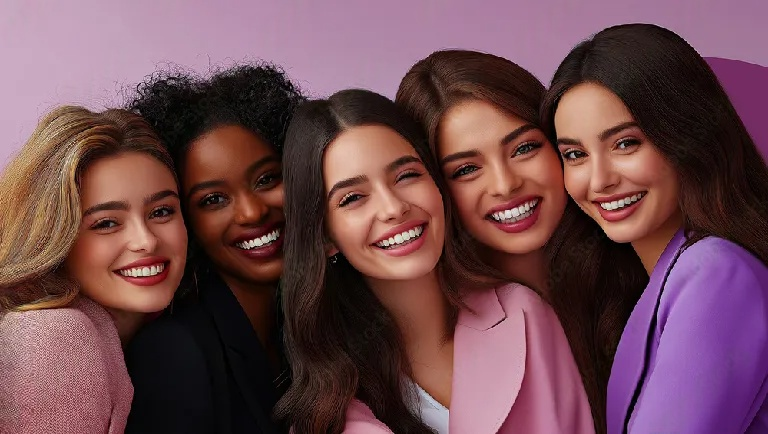

<!DOCTYPE html><html><head><title></title></head><body><h1></h1></body></html>
<!DOCTYPE html>
<html lang="en">
<head>
  <meta charset="UTF-8">
  <meta name="viewport" content="width=device-width, initial-scale=1.0">
  <title>Our Mission – Evolved Empowerment Project Inc.</title>
  <style>
    body { font-family: 'Open Sans', sans-serif; background-color: #f4f9ff; margin: 0; color: #333; }
    header, footer { background-color: #003366; color: white; text-align: center; padding: 1.5em; }
    nav { background-color: #005599; text-align: center; padding: 1em; }
    nav a { color: white; margin: 0 15px; text-decoration: none; font-weight: bold; }
    .section { max-width: 900px; margin: 2em auto; padding: 1em; background-color: #ffffff; border-radius: 8px; text-align: center; }
    h2 { color: #003366; }
    p { text-align: justify; }
  </style>
</head>
<body>
  <header>
    <h1>Evolved Empowerment Project Inc.</h1>
  </header>
 <nav>
  <a href="index.html">Home</a>
  <a href="mission.html">Our Mission</a>
  <a href="vision.html">Our Vision</a>
  <a href="about.html">About Us</a>
  <a href="programs.html">Programs</a>
  <a href="events.html">Events</a>
  <a href="founders.html">Founders</a>
  <a href="contact.html">Contact</a>
  <a href="donate.html">Donate</a>
</nav>
<section class="mission">
  
</section>  
    <h2>Our Mission</h2>
    <p>
      The mission of Evolved Empowerment Project Inc. is to restore confidence, dignity, and self-worth in women and youth through beauty-based healing, mentorship, and skill development. 
      We believe that beauty is more than appearance—it's a gateway to healing, identity, and resilience. 
      Our mission is carried out through trauma-informed programs that support emotional healing, foster positive self-image, and cultivate personal growth.
    </p>
    <p>
      Whether through a transformative hair care session, a community empowerment circle, or a one-on-one life skills mentorship, we strive to empower individuals to rise above trauma, break generational cycles, and step confidently into their full potential.
    </p>
  </section>
  <footer>
    <p>&copy; 2025 Evolved Empowerment Project Inc. | All rights reserved.</p>
  </footer>
</body>
</html>
